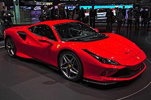
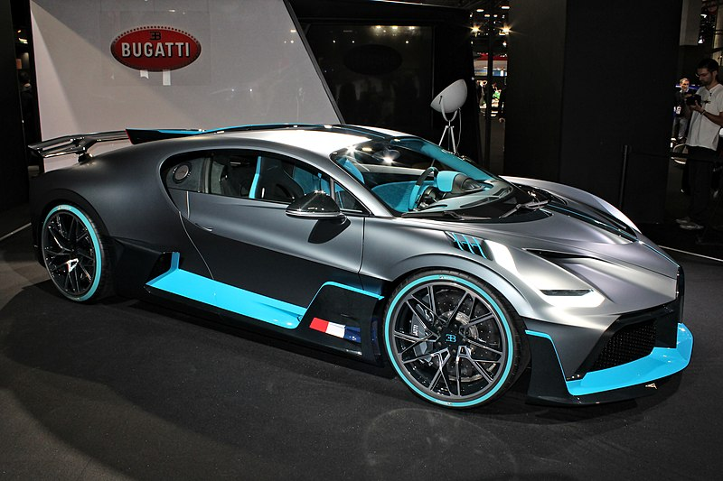

Ferrari
Ferrari es un fabricante de automóviles superdeportivos con sede en Maranello, provincia de Módena, en la región de Emilia-Romaña, Italia. Esta compañía es el resultante de la idea de su fundador Enzo Ferrari de crear una marca de automóviles de turismo con prestaciones lujosas y deportivas, basándose en los éxitos obtenidos a partir de la creación de su Scuderia Ferrari de automovilismo en 1929.
Historia
El famoso símbolo de Ferrari es un caballo negro rampante sobre un fondo amarillo y con los colores de la bandera de Italia en posición horizontal en la parte superior, normalmente con las letras SF de Scuderia Ferrari/San Fiorano, cuyo fondo tiene forma de escudo heráldico. En el caso de los coches de calle, tiene forma rectangular.
Modelos
n 2017, se presentó el 812 Superfast con un V12, el cual la empresa le considera como el Ferrari más potente de la historia. En agosto de ese mismo año se develó el nuevo descapotable Portofino, equipado con un motor V8, que reemplazó al California como modelo básico de la marca.9 En septiembre de 2022 la fábrica presentó al público su primer vehículo deportivo utilitario: el Purosangue con un V12.10
Lamborghini
Automobili Lamborghini S.p.A., comúnmente conocido como Lamborghini ([lamboɾˈɡiːni] en italiano3 y [lamboɾˈɡini] (en idioma español,4 mal pronunciado habitualmente [lamboɾˈʝini]), es un fabricante italiano de automóviles superdeportivos fundado en 1963 por el fabricante de tractores Ferruccio Lamborghini, con sede y oficinas ubicadas en la ciudad de Sant'Agata Bolognese, en la región de Bolonia y que actualmente forma parte del Grupo Volkswagen (Grupo VAG).

Historia
Terminada la Segunda Guerra Mundial, Ferruccio Lamborghini, que había servido en un destacamento de transporte para el Ejército Italiano, comenzó a comprar sobrantes de vehículos militares para convertirlos en maquinaria agrícola. Tal fue el éxito de su nuevo negocio que, en 1960, Lamborghini ya era el tercer fabricante industrial italiano en el sector de la construcción de maquinaria agrícola, especialmente de tractores.
Modelos
1963 350 GTV (prototipo) 1964 350 GT 1965 350 GT Prototipos: 3500 GTZ (Zagato), 350 GTS 1966 350 GT, 400 GT Prototipos: 400 GT Flying Star II, 400 GT Monza 1967 400 GT, Miura P400 Prototipos: Marzal 1968 400 GT, Miura P400, Espada, Islero Prototipos: Miura P400 Roadster 1969 Islero, Miura P400, Espada 1970 Miura P400 S, Espada 400 GTE, Jarama 400 GT Prototipos: Miura Jota, Urraco 1971 Miura P400 S, P400 Miura SV, Espada 400 GTE, Jarama Prototipos: Countach LP500 1972 Miura P400 SV, Espada 400 GTE, Jarama, Urraco P250
Bugatti
Bugatti es una marca francesa de automóviles de gran lujo y competencia fundada en el año 1909 por Ettore Bugatti (1881-1947) en Molsheim.1 En la actualidad es propiedad de Grupo Volkswagen.2 Con el lema de "Nada puede ser demasiado hermoso, nada puede ser demasiado costoso",3 los miembros de la familia Bugatti —Ettore; su hermano Rembrandt Bugatti, que fue el escultor de la célebre mascota del Type 41 Royale, el elefante,4 y su hijo Jean (talentoso diseñador y piloto)5— diseñaron y construyeron durante 30 años una serie de lujosos automóviles que destacaron tanto por su rendimiento como por su diseño.
Historia
El fundador Ettore Bugatti nació en Milán, Italia, y la compañía de automóviles que lleva su nombre fue fundada en 1909 en Molsheim, ubicada en la región de Alsacia, que fue parte de Imperio alemán desde 1871 hasta 1919. La compañía era conocida tanto por el nivel de detalle de la ingeniería de sus automóviles, como por la elegante forma en que se ejecutaban los diseños, dada la naturaleza artística de la familia de Ettore (su padre, Carlo Bugatti (1856-1940), fue un importante diseñador de muebles y joyas de estilo modernista).
Modelos
1990 - Bugatti ID 90 1993 - Bugatti EB112 1998 - Bugatti EB118 1999 - Bugatti EB218 1999 - Bugatti 18/3 Chiron 2009 - Bugatti 16C Galibier 2009 - Bugatti Stratos